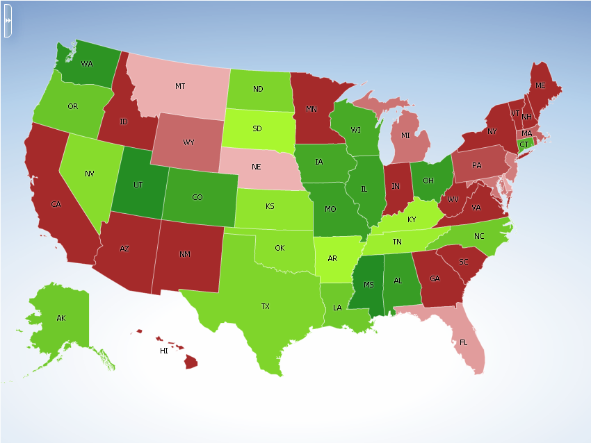
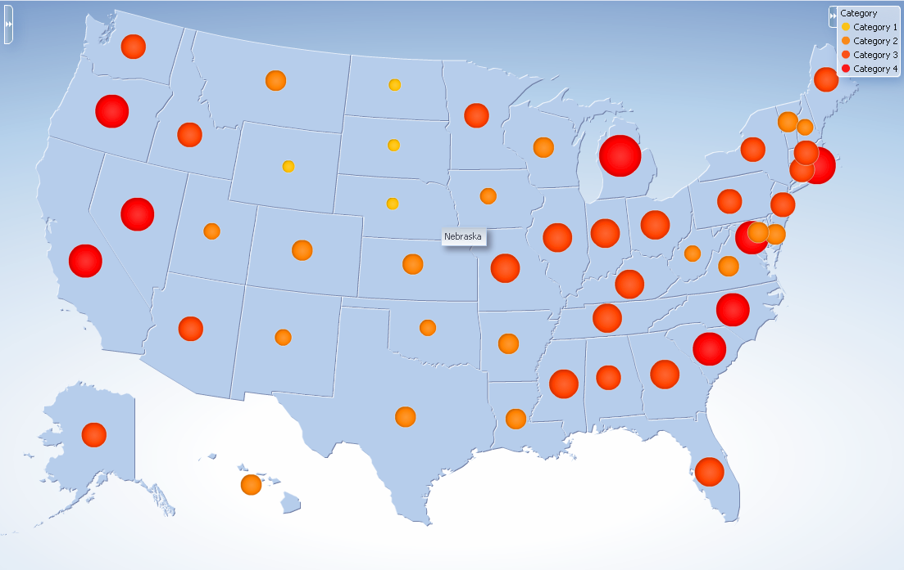

| Oracle Fusion Middleware Data Visualization Tools Tag Reference for Oracle ADF Faces 12c (12.2.1) E52773-01 |
dvt:areaDataLayer areaDataLayer area data layer
UIComponent class: oracle.adf.view.faces.bi.component.thematicMap.UIAreaDataLayer
Component type: oracle.dss.adf.thematicMap.AreaDataLayer
The areaDataLayer tag is used within the <dvt:areaLayer> tag to provide the ability to associate different regions in a areaLayer with a row of data. Each row can be shown as a colored region, a marker or an image through stamping. The table belows shows some example
| Type | Tag Sample | Sample Image |
|---|---|---|
| Area |
<dvt:areaLayer id="areaLayer" layer="states">
<dvt:areaDataLayer id="dataLayer" contentDelivery="immediate"
value="#{tmapTargetActualBean.model}"
var="row" varStatus="rowStatus">
<dvt:areaLocation id="areaLoc" name="#{row.name}">
<dvt:area id="area" fillColor="#{tmapTargetActualBean.colorObj}"
shortDesc="#{tmapTargetActualBean.tooltip}"/>
</dvt:areaLocation>
</dvt:areaDataLayer>
</dvt:areaLayer>
|
 |
| Marker |
<dvt:areaLayer >
<dvt:areaDataLayer id="regionLayer" contentDelivery="lazy"
value="#{stateData.colorModel}" var="row"
varStatus="rowStatus">
<dvt:areaLocation name="#{row.name}" id="al2">
<dvt:marker fillColor="#{row.color}" scaleX="#{row.size/2}"
scaleY="#{row.size/2}" shape="circle"
id="m1">
</dvt:marker>
</dvt:areaLocation>
</dvt:areaDataLayer>
</dvt:areaLayer>
|
 |
The areaDataLayer uses a model to access the data in the underlying list. The specific model class is oracle.adf.view.rich.model.CollectionModel. You may also use other model instances, e.g., java.util.List, array, and javax.faces.model.DataModel. The areaDataLayer will automatically convert the instance into a CollectionModel.
<dvt:areaDataLayer id="dataLayer" contentDelivery="immediate"
value="#{tmapTargetActualBean.model}"
var="row" varStatus="rowStatus">
In the areaDataLayer tag above, the model is specified in the value attribute by an EL expression. The stateData JavaBean contains the actual collection model. Each object in the model is accessed by referencing the EL variable specified by the var attribute in the areaLocation and area tags. At a minimum each object in the collection model must specify a region name that maps to a basemap region name. By specifying additional values for objects in the collection model, the fill color, description, and other attributions of a basemap region can be controlled.
<dvt:areaLocation id="areaLoc" name="#{row.name}">
<dvt:area id="area" fillColor="#{tmapTargetActualBean.colorObj}"
shortDesc="#{tmapTargetActualBean.tooltip}"/>
The selection feature of an areaDataLayer lets the user select one or more regions or markers in the map. The user can then perform some operation on the selected rows. The application developer can add its own listener code through the selectionListener attribute to work on the selected data.
<dvt:areaDataLayer
value="#{stateData.employmentData}"
var="row" varStatus="rowStatus"
selectionMode="multiple"
selectionListener="#{tmapEventBean.processSelection}"<
public void processSelection(SelectionEvent selectionEvent){
UIAreaDataLayer dataLayer = (UIAreaDataLayer)selectionEvent.getSource();
CollectionModel model = (CollectionModel)dataLayer.getValue();
RowKeySet selectedSet = dataLayer.getSelectedRowKeys();
...
}
The <dvt:areaDataLayer> tag can have the following children:
| Type | Phases | Description |
|---|---|---|
| org.apache.myfaces.trinidad.event.RowDisclosureEvent | Invoke Application, Apply Request Values |
The expansion event is delivered when a region is drilled up or down. |
| org.apache.myfaces.trinidad.event.SelectionEvent | Invoke Application, Apply Request Values |
The selection event is delivered when the selection on a DataLayer changes. |
| org.apache.myfaces.trinidad.event.AttributeChangeEvent | Invoke Application, Apply Request Values |
Event delivered to describe an attribute change. Attribute change events are not delivered for any programmatic change to a property. They are only delivered when a renderer changes a property without the application's specific request. An example of an attribute change event might include the width of a column that supported client-side resizing. |
| Name | Type | Supports EL? | Description |
|---|---|---|---|
| animationDuration | int | Yes | Default Value: 1000 Specifies the animation duration in milliseconds. The default value is 1000. |
| animationOnDataChange | String | Yes | Valid Values: none, alphaFade, conveyorFromLeft, conveyorFromRight, cubeToLeft, cubeToRight, flipLeft, flipRight, slideToLeft, slideToRight, transitionToLeft, transitionToRight, zoom Default Value: none Specifies the type of animation to apply when the value of this areaDataLayer changes. |
| attributeChangeListener | javax.el.MethodExpression | Only EL | A method reference to an attribute change listener |
| binding | String | Only EL | Binding reference to store the UIAreaDataLayer component |
| contentDelivery | String | Yes | Valid Values: lazy, immediate, whenAvailable Default Value: whenAvailable Specifies whether data should be fetched when the component is rendered initially. Valid values are:
|
| disclosedRowKeys | org.apache.myfaces.trinidad.model.RowKeySet | Yes | The set of row keys for the disclosed regions of this dataLayer. Each entry in the set is a rowKey. |
| emptyText | String | Yes | The text to display in the legend when the areaDataLayer has no data |
| id | String | No | The identifier for this areaDataLayer |
| isolatedRowKey | Object | Yes | The isolated state of this area data layer. If set, only the area corresponding to the isolated row key will be displayed. |
| partialTriggers | String[] | Yes | The IDs of the components that should trigger a partial update. This component will listen on the trigger components. If one of the trigger components receives an event that will cause it to update in some way, this component will request to be updated too. Identifiers are relative to the source component (this component), and must account for NamingContainers. If your component is already inside of a naming container, you can use a single colon to start the search from the root of the page, or multiple colons to move up through the NamingContainers - "::" will pop out of the component's naming container (or itself if the component is a naming container) and begin the search from there, ":::" will pop out of two naming containers (including itself if the component is a naming container) and begin the search from there, etc. |
| rendered | boolean | Yes | Default Value: true Specifies whether the component is rendered. The default value is true. |
| rowDisclosureListener | javax.el.MethodExpression | Only EL | A method reference to an ExpansionListener |
| selectedRowKeys | org.apache.myfaces.trinidad.model.RowKeySet | Yes | The selection state of this data layer |
| selectionListener | javax.el.MethodExpression | Only EL | A method reference to a selection listener |
| selectionMode | String | Yes | Valid Values: none, single, multiple Default Value: none Specifies whether regions/markers in an area data layer can be selected or not. Valid values are:
|
| shortDesc | String | Yes | The short description for the component |
| value | String | Yes | The data model being used by this areaDataLayer. The specific model class is org.apache.myfaces.trinidad.model.CollectionModel. You may also use other model instances, e.g., java.util.List , array, and javax.faces.model.DataModel. The areaDataLayer will automatically convert the instance into a CollectionModel. |
| var | String | No | Name of the EL variable used to reference each element of this Collection. Once this component has completed rendering, this variable is removed (or reverted back to its previous value). |
| varStatus | String | No | Name of the EL variable used to reference the varStatus information. Once this component has completed rendering, this variable is removed (or reverted back to its previous value). The VarStatus provides contextual information about the state of the component to EL expressions. For components that iterate, varStatus also provides loop counter information. Please see the this component's documentation for the specific properties on the varStatus. The common properties on varStatus include:
|